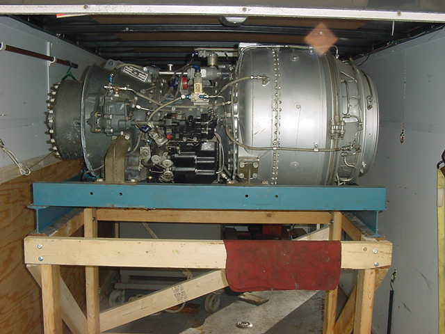
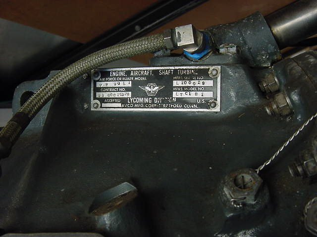
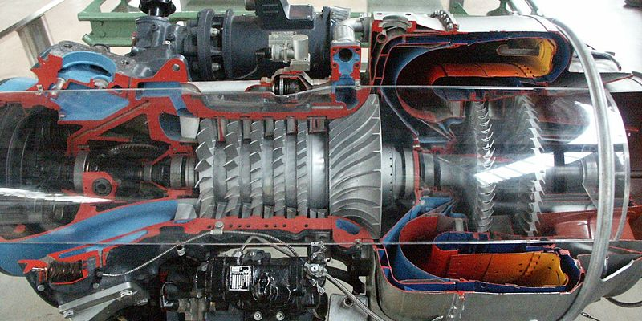

March 31, 2012
This page will be updated as needed to chronicle my T53 project. Ideally, this engine will end up powering a boat, a FAST boat. It will likely
require the assitance of many individuals and I hope this to be a "community" project using the skills of many freinds, both old, new and yet
to be known.


On new engine stand in my trailer
Serial #29, as old as I am
History:
T53-L1-A1 Lycoming Division of AVCO Corp. Circa 1957-1961. This is the second generation of the early T53 power plants built for, among other things, the
Bell "Huey" HU-1H Rotoray Wing Aircraft (that's HELICOPTER to those of you in Rio Linda). So far as I know this engine never saw flight service. It served
it's entire duty in a cushy lab performing test and verfication duty for those that built it. In other words, it's been lovingly made perfectly to spec
and never abused.
Description:
From the Honeywell Site:
"T53-A legend in its own time.
30 years of service, more than 19,000 engines, 50 million-plus flight hours. These numbers, and the heritage of the T53, are the stuff of legends.
The T53 design team was headed by Anselm Franz, designer of the famous WWII Junkers Jumo 004, the world’s first turbojet engine.
Originally developed by Honeywell legacy company, Lycoming, a properly maintained, 30-year-old T53 still meets today’s rigorous reliability standards
one of the reasons Time Between Overhauls (TBO) has been increased to 5,000 hours."
For those who don't know much about turbines (which may include me) this is a "free" turbine. Meaning the power output shaft and compressor shafts are
seperate. The compressor stages, which drive air into the combustion chamber, are driven seperately by the exhaust gases before the power turbine.
They are driven by it own power turbine blades. Thus, each set of shafts are free to turn at different speeds.
The advantage of this is that the output loading will have less affect on the efficient operation of the compressor and combustion stages in the event of
output overload, start-up loading, etc.

To get this operating I currenty need:
a starter/generator
two tachometer generators and percent speed readouts.
Turbine Oil
Auxiliary Fuel Pump
28 volt Power System (Batteries and DC Supply)
Control panel and control circuitry (relays, pressure switches, etc)
Brass testicles (optional, it has been found that stupidty will often substitute for lack of testicular fortitude).
And last but not least, MONEY. Being cheap, this may be the determining factor in time required.